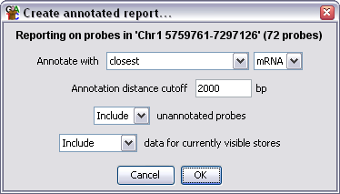
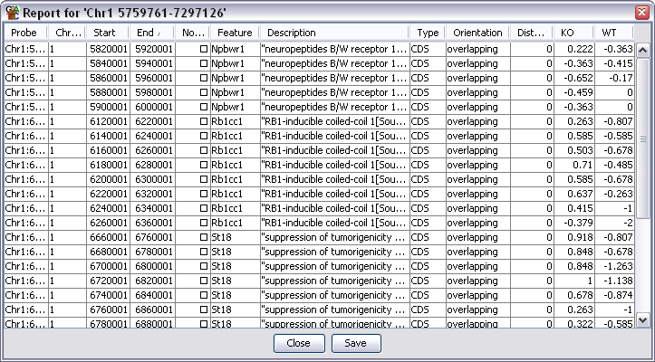

The Annotated Probe Report
The annotated Probe Report can be used to associate a list of individual
probes with a class of annotation features and can also include the
current quantitated value for the probe in a range of DataStores.
Options

- You can choose what sort of position a feature must have relative to
a probe to become annotated. You can choose from closest (any direction),
overlapping, upstream and downstream
- If you select anything other than overlapping you need to set a cutoff
for how far away a feature can be and still be associated with a probe.
- You can choose to omit any probes which couldn't be associated with a
feature from the final report
- You can choose to append extra columns on the end of the report for all
currently visible data stores which contain the current quantitated data
for each probe

Output Columns
The columns in an annotated probe report are:
- Probe Name
- Chromosome
- Start Position
- End Position
- Probe Value - When a filter creates a probe list it can associate a value with
each probe in the list (p-value etc.). Some filters don't add a value in which case
this column may be blank
- Feature name - will be blank if there is no associated feature. For overlapping
features there will be multiple entries in this column (and description) if the
probe is overlapped by more than one feature
- Description
- Type - the class of feature (CDS, Gene, mRNA etc)
- Orientation - where the feature was positioned relative to the probe
- Distance - how far away from the probe the closest part of the feature was
- Data Columns - if you selected to export data for current stores then there will
be one extra column per data store containing the current quantitated value for
each probe
You can choose to sort the report on any of the columns. Just click on a column
header to sort the data on that column. Click again to sort in the opposite direction.
If you double click on any line in the report the chromosome view will jump to that
point in the genome so you can see the data underlying that probe.
Saving the Report
If you press the Save button at the bottom you can save the full report to a file.
The files created are tab-delimited text files which you should be able to open in
a spreadsheet application for further processing. The saved report will keep the
current order of the rows in the report.